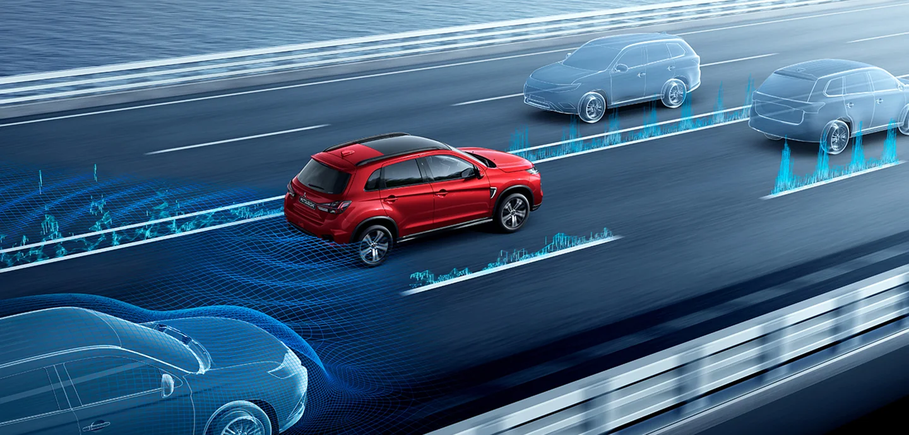
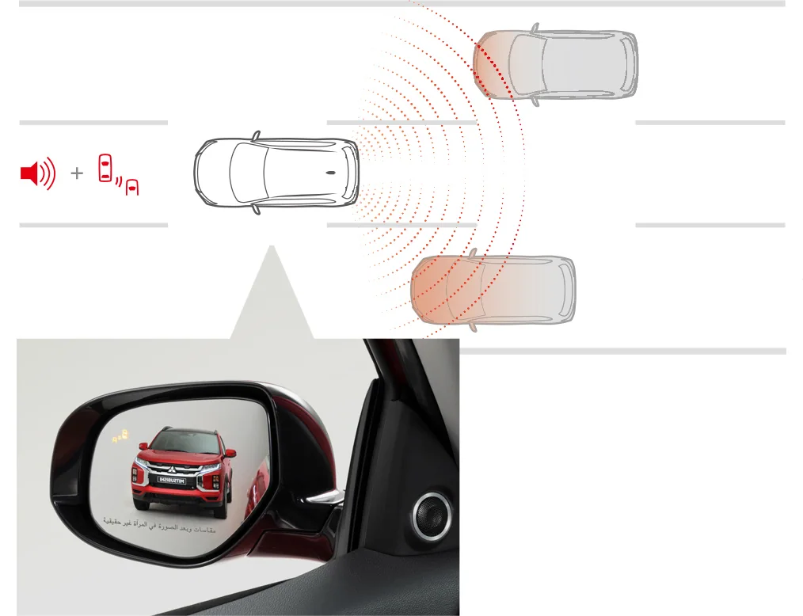
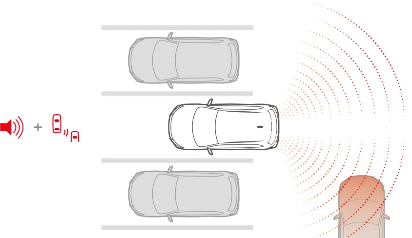
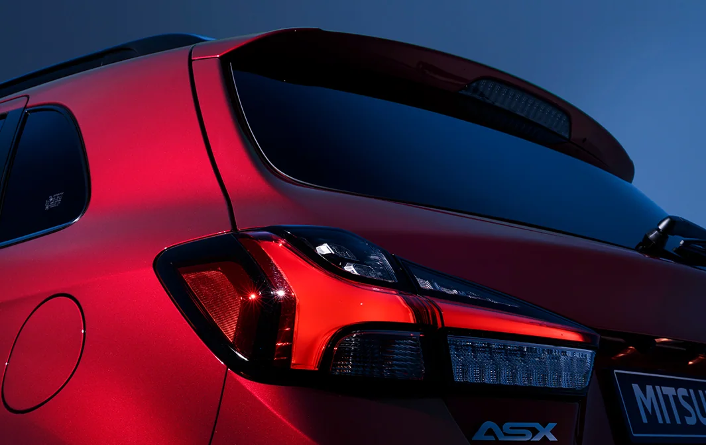
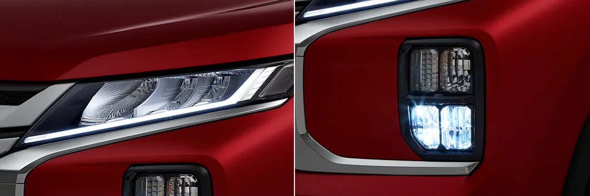
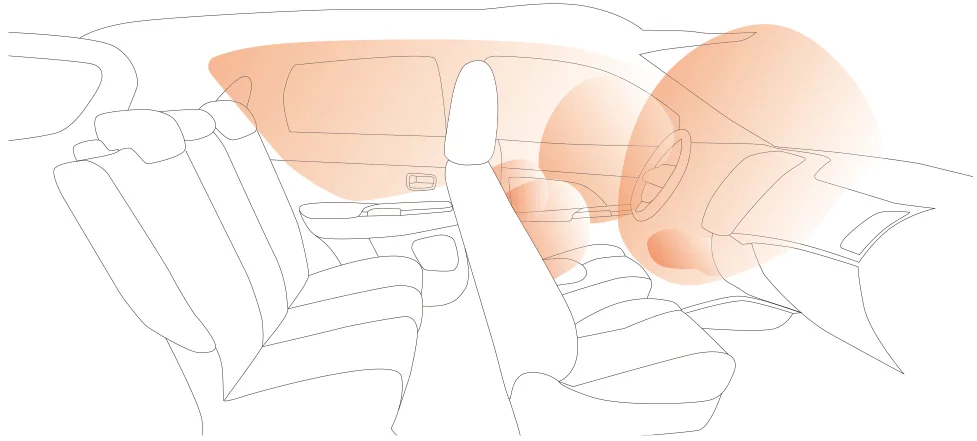
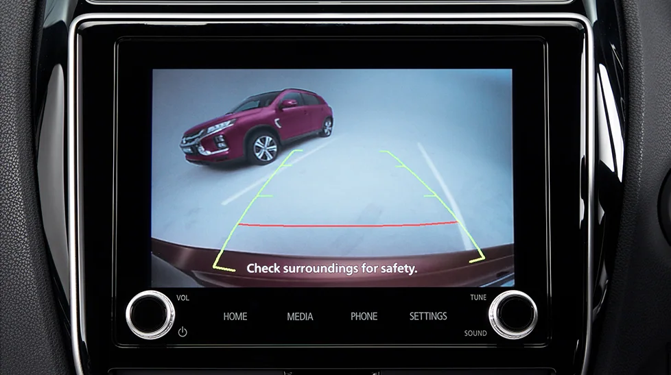
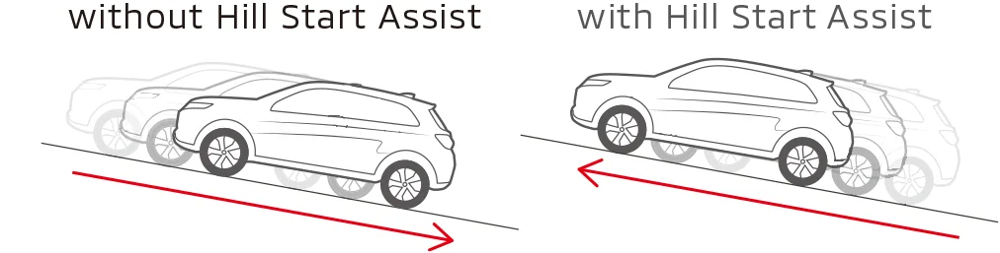

БЕЗОПАСНОСТЬ
КОНТРОЛЬ СЛЕПЫХ ЗОН BSW / ПОМОЩЬ ПРИ ПЕРЕСТРОЕНИИ LCA
Радарные датчики в заднем бампере обнаруживают автомобили в слепых зонах. Индикатор в зеркале предупреждает об автомобиле сбоку; при включённом поворотнике индикатор мигает и звучит сигнал.
Примечание: возможности обнаружения и контроля систем BSW/LCA являются вспомогательными: они не предупреждают об автомобилях в слепых зонах во всех ситуациях. Не полагайтесь исключительно на эти системы при вождении. Их работа может нарушаться в зависимости от дорожного движения, погоды, состояния дорожного покрытия и наличия препятствий. Водитель полностью отвечает за безопасное управление. Изображения радиолокационных волн приведены только для иллюстрации и не отражают фактическую работу датчиков. Дополнительная информация приведена в руководстве по эксплуатации.

ПРЕДУПРЕЖДЕНИЕ О ПОПЕРЕЧНОМ ДВИЖЕНИИ СЗАДИ RCTA
При движении задним ходом система RCTA предупреждает о приближающемся поперечном транспорте сообщением на дисплее, звуковым сигналом и индикаторами в зеркалах.
Примечание: не полагайтесь исключительно на эту систему — в определённых условиях она может не обнаруживать все движущиеся автомобили. Водитель полностью отвечает за безопасное управление. Изображения радиолокационных волн приведены только для иллюстрации и не отражают фактическую работу датчиков. Дополнительная информация приведена в руководстве по эксплуатации.

СВЕТОДИОДНЫЕ ФАРЫ
Светодиодные фары освещают широкую область дороги впереди.
ЗАДНИЕ КОМБИНИРОВАННЫЕ ФОНАРИ
Т-образные задние фонари подчёркивают устойчивый облик автомобиля. Стоп-сигналы загораются независимо для лучшей заметности.

ДНЕВНЫЕ ХОДОВЫЕ И ПРОТИВОТУМАННЫЕ ФАРЫ
L-образные дневные ходовые огни придают передней части спортивный характер. Противотуманные фары объединены с указателями поворота.

7-AIRBAG SYSTEM SRS AIRBAG
Доступная система из семи подушек включает передние и боковые подушки, коленную подушку водителя и шторки для обоих рядов.
Примечание: система из семи подушек безопасности предлагается как опция. Оборудование может отличаться от изображённого. Подушки являются частью дополнительной удерживающей системы SRS. Чтобы уменьшить риск травмы при срабатывании подушки, всегда пристёгивайтесь, сидите прямо по центру сиденья и не прислоняйтесь к двери. Дети в возрасте 12 лет и младше должны находиться на заднем сиденье в соответствующих детских удерживающих устройствах. Никогда не устанавливайте на переднем сиденье детское кресло против хода движения. Дополнительная информация приведена в руководстве по эксплуатации и инструкции детского кресла.

КАМЕРА ЗАДНЕГО ВИДА
Цветное изображение с камеры и направляющие линии помогают контролировать пространство позади автомобиля.

ПОМОЩЬ ПРИ ТРОГАНИИ НА ПОДЪЁМЕ HSA
HSA облегчает трогание на подъёме, ненадолго удерживая тормозное усилие до нажатия акселератора.
Примечание: HSA не заменяет безопасное управление. На крутых дорогах не полагайтесь исключительно на эту функцию. Автомобиль может откатиться назад при значительной нагрузке на педаль тормоза либо на очень крутой или скользкой дороге. Функция не предназначена для удержания автомобиля на подъёме более двух секунд. Не используйте её вместо нажатия педали тормоза для удержания автомобиля неподвижным. Дополнительная информация приведена в руководстве по эксплуатации.

СИГНАЛ ЭКСТРЕННОГО ТОРМОЖЕНИЯ
При резком торможении система автоматически включает мигание аварийной сигнализации для предупреждения водителей сзади.
Примечание: система сигнализации экстренного торможения является вспомогательной и не предотвращает столкновения во всех ситуациях. Управляйте безопасно и не полагайтесь исключительно на систему. Она активируется приблизительно с 55 км/ч, когда по резкому замедлению и работе антиблокировочной системы ABS определяется экстренное торможение. За дополнительной информацией обращайтесь к дилеру или дистрибьютору Mitsubishi Motors.
КУЗОВ RISE
Кузов RISE эффективно поглощает энергию удара и помогает сохранять целостность пассажирского пространства.